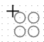
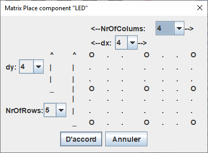

Матричное размещение компонентов
В Logisim-evolution можно быстро разместить на холсте целую матрицу (сетку) одинаковых компонентов. Для этого выполните следующие действия:
- Выберите нужный компонент в Навигаторе (например, светодиод) и наведите курсор на холст схемы.
- Перед кликом для размещения нажмите клавишу X. Фантомное изображение компонента примет вид матрицы размером 2x2.

Кликните левой кнопкой мыши в точке, где должен располагаться левый верхний угол будущей матрицы. На экране появится диалоговое окно настройки параметров сетки. Укажите желаемое число элементов по горизонтали и вертикали, а также расстояние (шаг сетки) между ними.

Совет: Если в этот момент активна функция автонумерации меток (клавиша L), созданные в матрице компоненты автоматически получат имена с указанием их координат по осям X и Y. Например: Led_X1_Y0.
Далее: Назад к руководству пользователя.